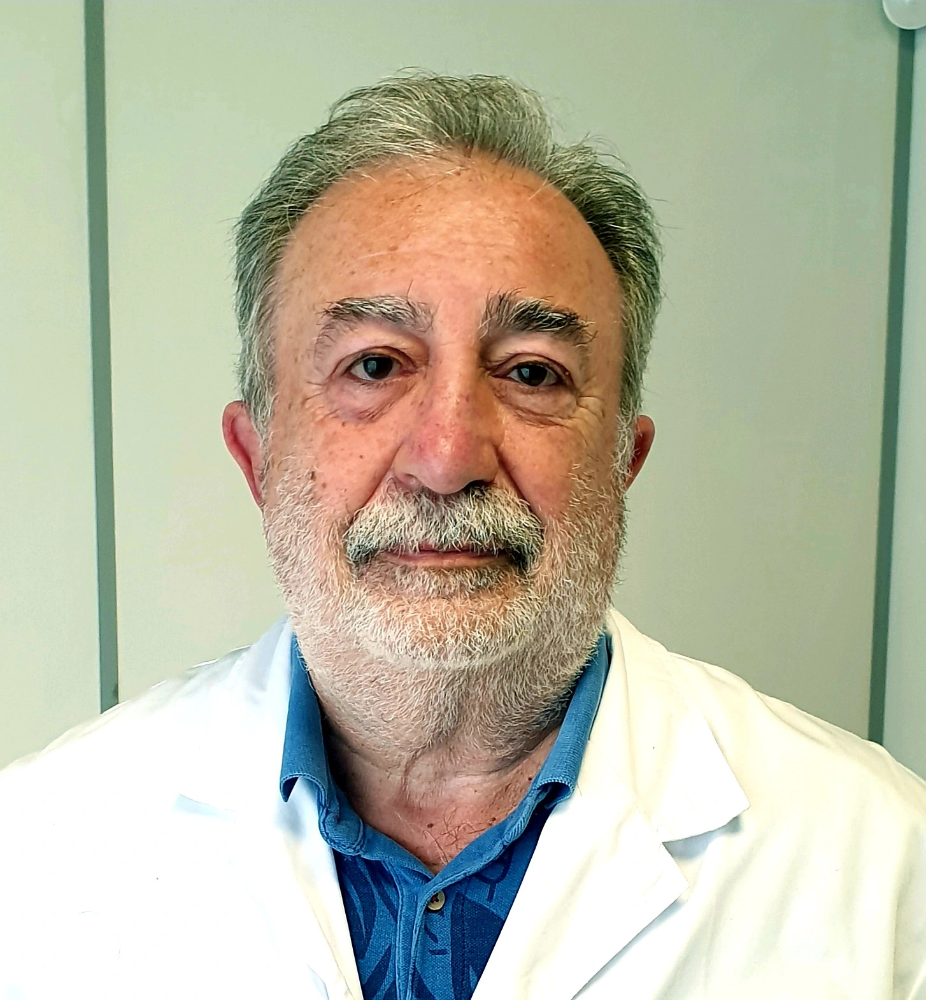

Equip de traumatologia
Especialistes en traumatologia i ortopèdia a Vic.

Josep Manuel Buisan
Núm. col·legiat: 9676

Josep Castanedo Perez
Núm. col·legiat: 11394
Atenció integral de patologies traumàtiques i ortopèdiques.
Servei de traumatologia per mútues assistencials i visites privades. Atenció personalitzada de pacients amb patologia traumàtica, congènita o ortopèdica de l'aparell locomotor.
Atenció de pacients amb patologia traumàtica, congènita o ortopèdica de l'aparell locomotor.
Valoració clínica, diagnòstic i prevenció de les diverses afectacions traumatològiques i fractures.
Tractament individualitzat i de qualitat per a cada pacient, amb seguiment continuat i proper.
Especialistes en traumatologia i ortopèdia a Vic.

Núm. col·legiat: 9676
Núm. col·legiat: 11394